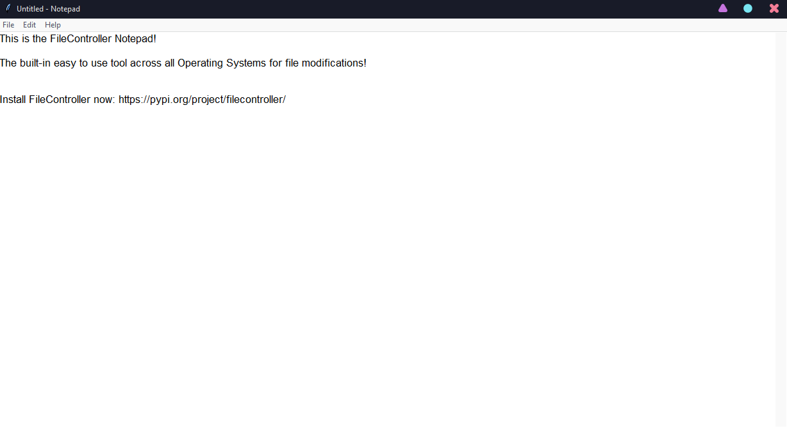

Information¶
What is FileController?¶
FileController is a utilized Python 3 library to make working with files easier than ever. It offers all of the built-in Python File Management Utilities (open, create, delete) etc. as well as more advanced features like a ZIP viewer, a file combiner, a user-friendly file editor etc. It can make working with files in Python so much more comfortable and easy, and with it’s utilities and tools it can change the way people work with files. It is easily accessible, small and effective at the same time! All you have to do is download FileController and start using it!
Why should you use FileController?¶
As mentioned before, FileController is a PyPi Project with a large scale of tools and utilities to make the user’s experience with files easy and quick. It can be used any time the user wants to access, modify or delete any files. You can easily access it through the code at any given time, and use it in all sorts of projects that involve files. It can save you time and space, and it can make it easier to access or modify multiple files at once without getting lost. FileController also features more advanced utilities like the ZIP reader and archive makes, merging files, deleting/editing specific lines etc.
What is coming up in the future?¶
Improvements and bug-fixed are happening every day, so there is no way to guess exactly what is changing in the next versions, but here are a few planned things to change:
FileManager and ZipViewer split and more features added to both of them
GUI Interface for ZIP Creator and file editor
ZIP Archiving for all types of files
File Encrpytor and Decryptor
File Protector that can password-protect files
File Type Changer (With GUI Interface)
Apart from all that, new bugfixes and small features are being made on a daily basis and the source code is always public for other developers to help. If you experience any errors with FileController feel free to contact me on GitHub or on my discord (Scarface#3902)
[!] Things to keep in mind¶
Please use the name of the object we will set up to run any commands, not the name of the class.
Any functions that have to do with modifying files with numbers start from 1 instead of 0, to make FileController more user-friendly. So, if you wanted to do
fm.deleteLine('text_file.txt', '0')to delete the first line, you’d type ‘1’ instead of ‘0’.If a function does not work, please get in contact with me with the contacts I’ll be leaving below and I will do my best to fix it on the next release.
Using FileController¶
1 - Getting Started¶
1.1 - Installing FileController¶
Windows¶
Open up Command Prompt by clicking the Windows Key + R on your keyboard and typing
cmdAfter you have CMD open, type
pip install filecontroller(if you use a Virtual Enviroment type the same thing on the IDE’s command line)After you have done that, check it by typing
pip listIf you see
filecontrollerin the list, you are good to go! If not, try the commandpip install --upgrade pipand try the process again
MAC¶
Open Terminal and type
pip install filecontroller(ifpipis not on your compter, typeeasy_install pip)After you’ve installed that, check if it’s installed by typing
pip list.If you see
filecontrollerin the list, you are good to go! If not, try the commandpip install --upgrade pipand try the process again
Linux
~~~
Linux installation depends on your version of linux, look up how to install python modules on (version) and you
should find some helpful information.
1.2 - Setting up FileController¶
To set up FileController, open up any python project and do the following:
1. Import the project by typing from filecontroller import *
2. Set the any class of fileController to an object by typing my_object = class()
3. Every time you want to use a function, type my_object.function() to call it.
There are 4 different classes: * fileManager(): The classic class of fileController; used for any file functions * zipManager(): The zipManager class, used for any functions that have to do with .zip files * fileGUI(): A class that opens up a GUI Notepad that can he used to edit files with a nice-looking interface * zipGUI(): A class that opens up a program (ways to call it are on the code documentation) which helps you to view/unzip ZIP files through a user-friendly interface.
Here is a full example of a code that can read a ‘test.txt’ file assuming it’s on the same directory:
1 2 3 4 | from filecontroller import *
my_object = fileManager()
my_object.readFile('test.txt')
|
Note: From now on I’ll be refering to the fileManager Object as fm and the zipManager Object as zm (inforamtion
about the GUI interfaces of both are on the Code Documentation)
1.3 - Basic Functions of fileManager¶
Although all the functions are listed on the Code Documentation with their exact usages, here I’ll be listing some of the most basic functions of FileController:
fm.readFile(‘test.txt’) -> Opens a ‘test.txt’ file
fm.writeToFile(‘test.txt’, ‘Test Note’) -> Writes ‘Test Note’ at the bottom of the ‘test.txt’ file
fm.editFile(‘test.txt’, 2, ‘Edited Line’) -> Will edit the line 2 of the file (not supporting binary, 0 is 1)
fm.deleteFile(‘test.txt’) -> Deletes the contents of the ‘test.txt’ file
fm.renameFile(‘test.txt’, ‘renamed.txt’) -> Renames ‘test.txt’ to ‘renamed.txt’
These are the most basic functions of FileController. Other functions are as useful, but these are the mostly used in normal python file management
1.4 - Basic Functions of zipManager¶
As we mentioned above, FileController also has some advanced functions like the ZIP-Viewer. Here are a few functions of the ZIP Viewer and some other advanced functions:
zm.zipFiles(2, ‘zipped.zip’) -> You set the number of .txt files you want to archive into a ZIP, then you put each file/directory when it asks you to input them into the console, and you have a ready .ZIP archive in that directory!
zm.readZIP(‘zipped.zip’) -> Displays a tree view of the .ZIP file you choose (it works with directories too)
zm.extract(‘zipped.zip’) -> Extracts the contents of a .ZIP file
1.5 - Errors and Problems¶
If you encounter any error while using FileController, don’t hesitate to contact me on discord as I’ve mentioned before (Scarface#3902) or on my GitHub Profile (alex.m). This project is beta and I’m making everything by myself, so I’d appreciate and bug reports that will help me make FileController as good as possible. But, until I make the next release, I have good news. If you’ve encountered an error and you’ve messaged me, chances are, within some hours or days, it will be fixed on the GitHub Open Source page of the project, where I constantly post stability updates and I resolve issues. Because I won’t be releasing PyPi versions for every little issue, GitHub is the way to go. Moreover, if you know Python well enough and you’re interested in helping me with the projects, feel free to contact me on Discord, and we can start working! I’d really appreciate any help that will make me make the project as good as possible, so any help you can provide is much appreciated.
2 - Basic Uses¶
2.1 - Functions¶
Functions in FileController can do all the basic file management command in Python and there are also some more advanced tools included like a ZIP manager etc. Here is a quick table with the functions and a small usage:
Functions |
Usages |
|---|---|
fc.readFile(filename) |
Reads the contents of a txt file |
fc.writeToFile(filename, text) |
Write text into a file |
fc.editFile(filename, line, text) |
Edits a specific line of a file |
fc.deleteFile(filename) |
Deletes an entire file |
fc.deleteLine(filename, line) |
Deletes a specific line from a file |
fc.getList(filename, listname) |
Creates a list from the file |
fc.writeList(filename, listname) |
Writes a list into a file |
fc.createFile(filename) |
Create a file |
fc.renameFile(oldname, newname) |
Renames a file |
fc.combine(f1, f2, merged_file) |
Merges two .txt files into one |
fc.replaceWord(oldword, newword) |
Replaces a word in a file |
Functions |
Usages |
|---|---|
fc.zipFiles(number, zipname) |
Zips a number of .txt files into 1 |
fc.readZIP(zipname) |
Reads the contents of a ZIP file |
fc.extract(zipname) |
Extracts a ZIP file |
(Excluding classes because they are explained in-depth on part 3)
2.2 - Usages¶
After you saw the table above, you may have a general idea of what each function does. Below there are the exact usages along with other information that may be useful:
2.3 - Uses in projects¶
Some of you might be asking “How can this be useful for a project”? The answer is, it’s not like most other libraries, it’s not impossible to think what it does, but it can save you tons of lines. A small project that I made for testing, which was a simple Console Notepad that reads, writes, edits or deletes a file took 107 lines without using FileController. After using FileController, it only took 38 lines! The difference is big, it makes your code more clear and easy to understand and it takes you less time to finish something.
3 - GUI Interfaces¶
3.1 - Getting Started with GUI¶
GUI Interfaces in FileController work a little bit differently than functions. To run a class, you have to follow a few
extra steps other than importing FileController
1. Import the built-in library Tkinter by typing from tkinter import *
2. Define the Tk() class within Tkinter: root = Tk()
3. Define the fileGUI or the zipGUI class form FileController (usually called win) and pass into it the Tk() object:
win = fileGUI(root)/win = zipGUI()
Type (root.mainloop()) at the end.
NOTE: Please only use 1 GUI class at a time, or separate them into functions.
Here’s a code template for using fileGUI():
from filecontroller import *
from tkinter import *
root = Tk()
win = fileGUI(root)
root.mainloop()
and here’s a code template for using zipGUI():
from filecontroller import *
from tkinter import *
root = Tk()
win = zipGUI(root)
root.mainloop()
3.2 - Using GUIs together¶
As mentioned before, you cannot use 2 GUI classes at the same time, because Tkinter cannot handle 2 windows open at the same file. But there are 2 easy ways that we can get around this.
1. Using different window names
One easy way that we can get around this is by using different window names. That means, when we make the Tkinter
Tk() class object, we will make two different objects with two different names, for example root and top.
Here’s an example where we use 2 different window names:
1 2 3 4 5 6 7 8 9 10 11 12 13 | from filecontroller import *
from tkinter import *
# File GUI part
root = Tk()
win = fileGUI(root)
root.mainloop()
#Zip GUI part
top = Tk()
win = zipGUI(top)
top.mainloop()
|
However, this code is not effective, because you have to close the first window for the second window to open. You could use a library like subprocess to avoid that, but this is not part of the documentation.
Using Functions For this method, we will use functions to let the user choose which window they want to open without them being connected to each other in any way. We will do the same process as before, but we will split them into different functions so that the user can choose which one of them they want to open.
Here’s a simple console app that lets you choose between the two:
1 2 3 4 5 6 7 8 9 10 11 12 13 14 15 16 17 18 19 20 21 22 23 24 | def startFileGUI():
root = Tk()
win = fileGUI(root)
root.mainloop()
def startZipGUI():
root = Tk()
win = zipGUI(root)
root.mainloop()
print('--Option Chooser--')
print('1 - File GUI')
print('2 - Zip GUI')
print('3 - Exit')
uChoice = input()
if uChoice == '1':
startFileGUI()
elif uChoice == '2':
startZipGUI()
elif uChoice == '3':
quit()
else:
print('Invalid option')
|
3.3 - GUI Usage¶
The FileController GUIs have many different uses, and make the modification of files much easier. Here’s a detailed usage for the two classes:
{kind=link}
fileGUI(): The fileGUI() class can be used like a notepad to open, modify and save files. The reason that you should use it instead of the Windows Notepad is because it’s simplicity and easy access. First of all, to open the Windows Notepad you have to open it via the
os.startfile()command from within the System32 folder. There is a possibility that the program or the user who is running the program may not have full access to the computer, therefore using the Windows Notepad without any extra modifications would be practically impossible. Also, the FileController notepad looks and feels just like the Windows Notepad and it is OS independent. Both of these things can be bypassed with normal python commands, but it would take a good amount of time to even find the commands to fix these issues. As for the FileController notepad, it bypasses all these errors with a fully built-in easily accessible tool.n
{kind=link}
zipGUI: The zipGUI() class can be used to open, modify or extract any ZIP file from a nice-looking user interface. It has a nice look and it is easy to use offering a lot of features, more than most other ZIP GUI Programs! If you want to extract, view or modify a .zip file zipGUI() is definitely the best way to do this. It is OS independent and it comes with a pre-build GUI. All you have to do is set it up like shown above, and you will have it ready.n
3.4 - GUI vs Console¶
From now you should probably have a general idea of which one you should use. In this text I’ll just say some more things to keep in mind. First of all, if you make this for a school project or something similar, it is not recommended to use the GUI. There will be no work seen behind your project if you use the GUI tools from the library. On the other hand. if you are using FileController not as a primary project but as a part of your project (which is more likely to happen), you should use what comes in handy for the situation. If you are building a console project, I recommend using the console functions unless you specifically want to use a GUI Interface. If you are making a GUI project, I obviously recommend to use the GUI system. Just keep in mind that you should think of all the different factors before you come to a conclusion.
3.5 - End of part 3¶
To conclude on part 3, GUIs are a powerful tool that should be only used under the right circumstances. Using a GUI can make things a bit simpler, only if you know how it works and how to use it the right way. The GUI documentation could include many more stuff, but I thought that I’d only include the essential things needed for this part.
Conclusion¶
This is the end of the documentation for FileController 1.0.2. A lot of things have changed, and there will probably be some errors as well. If you find any errors, feel free to join the discord server from the PyPi links and contact me from there, or just directly contact me on my GitHub account (alex-mst) where you can also find the source code for any update or any stable minor change that has not been included in a version yet.
–End–